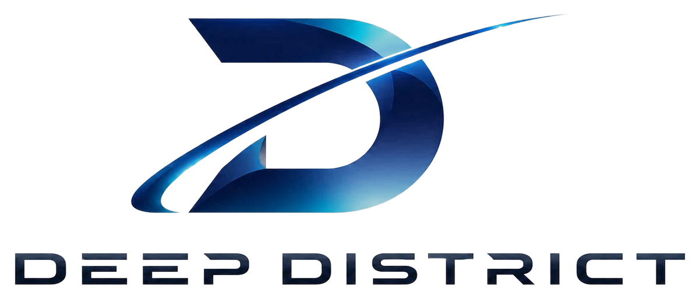

Missionพันธกิจ
Teach, mentor and research in STEM, AI and SI, from foundation to advanced, for education and for real-world partners.
สอน ดูแลงานวิจัย และทำวิจัยด้าน STEM, AI และ SI ตั้งแต่พื้นฐานถึงขั้นสูง ทั้งเพื่อการศึกษาและเพื่อพันธมิตรในโลกจริง

DeepDistrict is a learning and research lab based in Bangkok, Thailand. We want to strengthen and support learning and research in STEM and SI, so that people can use it to create and to keep developing the world.
DeepDistrict คือห้องปฏิบัติการด้านการเรียนรู้และการวิจัยในกรุงเทพมหานคร ประเทศไทย เราต้องการสร้างเสริมและสนับสนุนการเรียนรู้และการวิจัยด้าน STEM และ SI เพื่อให้ผู้คนนำไปสร้างสรรค์และพัฒนาโลกต่อไป
Teach, mentor and research in STEM, AI and SI, from foundation to advanced, for education and for real-world partners.
สอน ดูแลงานวิจัย และทำวิจัยด้าน STEM, AI และ SI ตั้งแต่พื้นฐานถึงขั้นสูง ทั้งเพื่อการศึกษาและเพื่อพันธมิตรในโลกจริง
A generation in Thailand and beyond that can understand, build and guide intelligent technology, all the way to SI.
คนรุ่นใหม่ในประเทศไทยและทั่วโลก ที่เข้าใจ สร้าง และกำกับเทคโนโลยีอัจฉริยะได้ ไปจนถึง SI
Curiosity, rigour, honesty, care for every learner, and technology that serves people.
ความอยากรู้ ความเข้มงวดทางวิชาการ ความซื่อสัตย์ การใส่ใจผู้เรียนทุกคน และเทคโนโลยีที่รับใช้มนุษย์
SI is intelligence that goes beyond today's AI: it reasons, discovers and creates across virtually every field, aligned with human values and under human oversight. It is our long-term research horizon, and the reason every course leads somewhere bigger.
SI คือความฉลาดที่ก้าวข้าม AI ในปัจจุบัน สามารถให้เหตุผล ค้นพบ และสร้างสรรค์ได้ในแทบทุกสาขา โดยสอดคล้องกับคุณค่าของมนุษย์และอยู่ภายใต้การกำกับดูแลของมนุษย์ SI คือเป้าหมายงานวิจัยระยะยาวของเรา และเป็นเหตุผลที่ทุกหลักสูตรนำไปสู่สิ่งที่ยิ่งใหญ่กว่า
People set the goals and make the decisions. Safety comes before scale.
มนุษย์เป็นผู้กำหนดเป้าหมายและตัดสินใจ ความปลอดภัยต้องมาก่อนการขยายขนาด
Personal data protected under the PDPA, and a safeguarding policy for every young learner.
คุ้มครองข้อมูลส่วนบุคคลตาม PDPA และมีนโยบายคุ้มครองผู้เรียนที่เป็นเยาวชนทุกคน
Original work, honest results, disclosed AI use and fair credit.
ผลงานต้นฉบับ ผลลัพธ์ที่ซื่อตรง เปิดเผยการใช้ AI และให้เครดิตอย่างเป็นธรรม
We share code, data and findings whenever privacy and safety allow.
เราเปิดเผยโค้ด ข้อมูล และผลการค้นพบ ทุกครั้งที่ไม่กระทบความเป็นส่วนตัวและความปลอดภัย
Clear paths for every age and background, with support for those who need it.
เส้นทางที่ชัดเจนสำหรับทุกวัยและทุกพื้นฐาน พร้อมการสนับสนุนสำหรับผู้ที่ต้องการ
Health, environment, education and industry problems first, with efficient compute.
ให้ความสำคัญกับโจทย์ด้านสุขภาพ สิ่งแวดล้อม การศึกษา และอุตสาหกรรม พร้อมใช้ทรัพยากรประมวลผลอย่างคุ้มค่า
Learning does not end with a certificate. Strong learners can grow into roles inside DeepDistrict and with our partners.
การเรียนรู้ไม่ได้จบที่ประกาศนียบัตร ผู้เรียนที่โดดเด่นสามารถเติบโตสู่บทบาทต่าง ๆ ภายใน DeepDistrict และกับพันธมิตรของเรา
Build skills from foundation to advanced.
สร้างทักษะตั้งแต่พื้นฐานถึงขั้นสูง
Courses & certificatesรายวิชาและประกาศนียบัตรContribute new knowledge with a mentor.
สร้างองค์ความรู้ใหม่ร่วมกับอาจารย์ที่ปรึกษา
Papers & awardsบทความและรางวัลTurn research into products and services.
เปลี่ยนงานวิจัยให้เป็นผลิตภัณฑ์และบริการ
Prototypes & startupsต้นแบบและสตาร์ทอัปTeaching assistants, research assistants and engineers with partners.
ผู้ช่วยสอน ผู้ช่วยวิจัย และวิศวกรร่วมกับพันธมิตร
Careers & mentoringอาชีพและการเป็นพี่เลี้ยง
The solid D stands for Deep and District: deep learning and research, and a real place where people work together.
ตัว D ที่มั่นคงหมายถึง Deep และ District คือการเรียนรู้และการวิจัยเชิงลึก และสถานที่จริงที่ผู้คนมาทำงานร่วมกัน
The bright arc is the path of intelligence moving beyond its limits, from deep blue to light: from learning, to research, to impact.
เส้นโค้งที่สว่างไสวคือเส้นทางของความฉลาดที่ก้าวข้ามขีดจำกัด จากสีน้ำเงินเข้มสู่แสงสว่าง จากการเรียนรู้ สู่การวิจัย และสู่การสร้างผลกระทบ